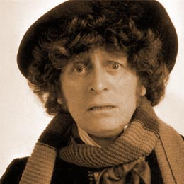

|  | The Fourth Doctor was portrayed by Tom Baker for seven consecutive seasons from December 28, 1974 to March 21, 1981. Baker remains the longest-lived incarnation of the Doctor in the show's on-screen history, counting both the classic and modern series. This longest running on-screen Doctor appeared in 172 episodes over a seven-year period. He also appeared in the specials "The Five Doctors" and made his final television appearance in the UK in the charity special "Dimensions in Time". Baker made his final appearance in 1997 television advertisements in New Zealand. |